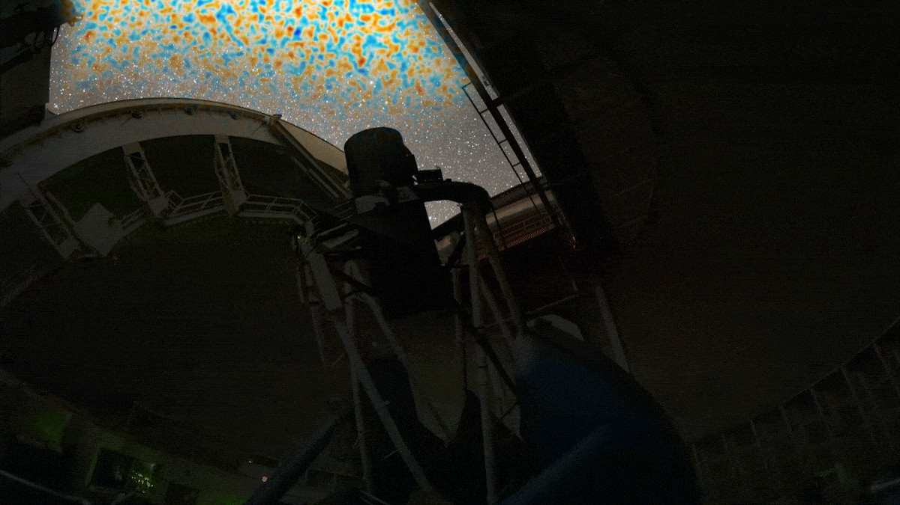

Some of the publications of the group can be found on the ADS with the following query
here.
Cosmologia Computacional
Cosmologia Computacional é a área da cosmologia dedicada ao desenvolvimento e aplicação de métodos numéricos e simulações para compreender a estrutura e a evolução do Universo.
Inclui a criação de códigos para o cálculo teórico de observáveis cosmológicos — tanto no modelo padrão quanto em extensões além do ΛCDM —, a realização de simulações de matéria escura e a construção de pipelines para a análise de dados sintéticos e observacionais de grandes levantamentos astronômicos.

Cosmologia Observacional
Simulações numéricas e modelos para compreender a evolução do universo.

Gravitação Quântica
Escrever sobre Gravitação Quântica.

Interações fortes e física nuclear
Falar sobre Interações fortes e física nuclear.

Ondas Gravitacionais
Falar sobre Ondas Gravitacionais.

Universo Primordial
Falar sobre Universo Primordial.

Universo tardio
Universo tardio - energia escura.

Teoria quântica de campos
Falar sobre Teoria quântica de campos.